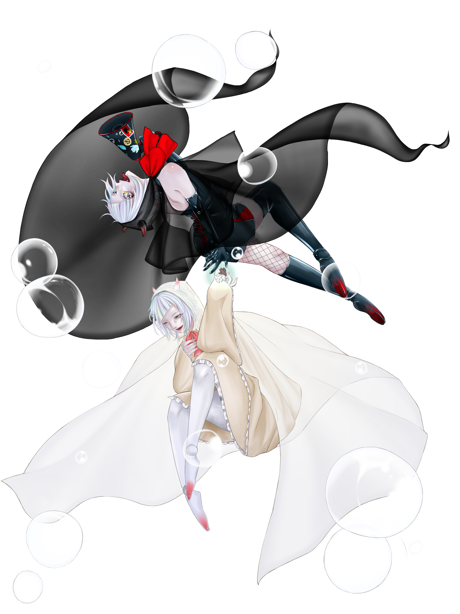

TOP
Character
Voicedata
Readme
Gallery

花氷クレオ公式サイトへようこそ。
当サイトでは、UTAU向け音声ライブラリ「花氷クレオ(かひょう くれお)」を配布しています。
お知らせ
2023.02.07 - 公式HPの運営を開始しました
2023.02.07 - 標準音源セットを追加しました
2023.07.17 - 公式イラスト配布ページを追加しました
2023.07.17 - 利用規約を一部変更しました
2023.07.18 - 多段階音源セットを追加しました
2023.10.15 - 強弱音源セット(雷雪/慈雨)を追加しました
2024.01.13 - ギャラリーページを更新しました
2026.02.14 - 公式HPのURLを変更しました
コンセプト
・人間らしい歌声で人間にはできない歌唱をする
・どんな作品にも適応する
この二点をコンセプトにし、流氷の天使とも呼ばれるクリオネをイメージしてデザインされました。
吹雪のような激しい作品から深海のような静かな作品まで幅広くご利用いただけます。
UTAUとは？
飴屋／菖蒲氏が制作されているWindows向けの歌声合成ソフトウェアです。
ソフトの詳細、DLはこちら→
歌声合成ツールUTAU
キャラクター詳細はこちら
配布所はこちら
作品一覧はこちら